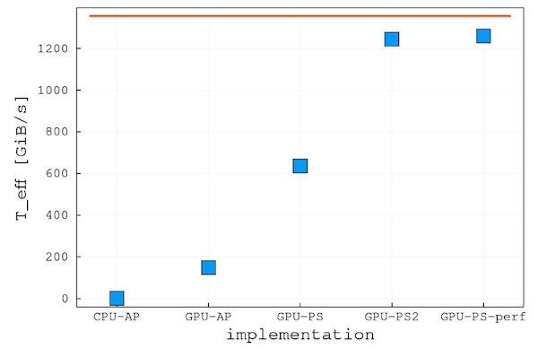
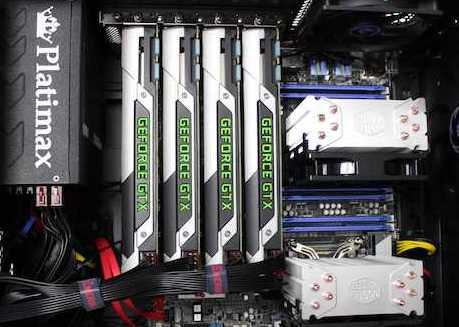
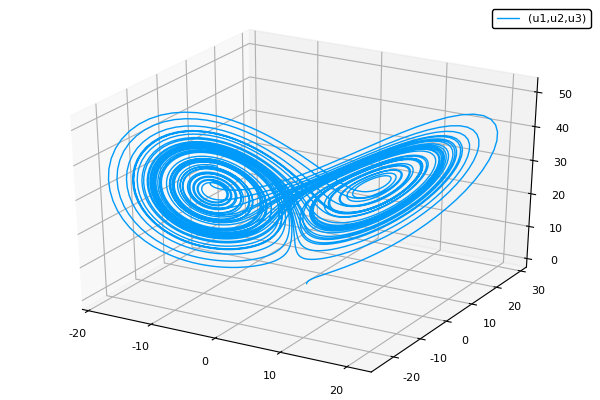
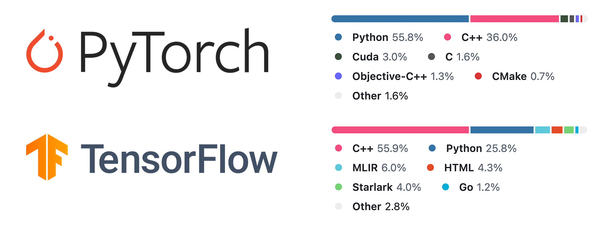

Welcome to ETH's course 101-0250-00L on solving partial differential equations (PDEs) in parallel on graphical processing units (GPUs) with the Julia language.
Agenda
üí° Welcome words & The small print
üìö Why GPU computing
üíª Intro to Julia
üöß Exercises:
Numerical solutions
Predictive modelling
Visualisation
üëâ get started with exercises
Ludovic Räss — the good
Samuel Omlin — the bad
Mauro Werder — the ugly
Ivan Utkin — the talking head
You Wu — the teaching assistant
All the information should be available on the course's website:
https://pde-on-gpu.vaw.ethz.ch
If something is missing, let us know so we can add it, or even better, submit a pull request to the course's repository
We use the chat on Element as the main communication channel for the course
Communication between students is encouraged
Join Element (https://chat.ethz.ch/) by logging in with you NETHZ username & password
Login link is available on Moodle
Join the General room for course-related information
Join the Helpdesk room for exercises Q&A
All homework assignements can be done either alone or in groups of two. However, note that every student has to hand in a personal version of the homework.
6 Weekly exercises in Part 1 and Part 2 of the course as homework — 30%
Best five out of six are graded
Consolidation project, developed during Part 3 of the course — 35%
Final project — 35%
Bring your laptop to all lectures!
Who has access to an Nvidia / AMD GPU?
What operating system are you on?
In the first two lectures we will use JupyterHub. Later you will setup a personal Julia installation.
Almost all information is available on https://pde-on-gpu.vaw.ethz.ch
If something important is missing, let us know or make a PR
Suggestion:
Bookmark https://pde-on-gpu.vaw.ethz.ch
Why we do it
Why it is cool (in Julia)
Examples from current research
Predict the evolution of natural and engineered systems.
e.g. ice cap evolution, stress distribution, etc...
Physical processes that describe those systems are complex and often nonlinear
no or very limited analytical solution is available
üëâ a numerical approach is required to solve the mathematical model
A numerical solution means solving a system of (coupled) differential equations
\[ \mathbf{mathematical ~ model ~ → ~ discretisation ~ → ~ solution}\\ \frac{∂C}{∂t} = ... ~ → ~ \frac{\texttt{C}^{i+1} - \texttt{C}^{i}}{\texttt{∆t}} = ... ~ → ~ \texttt{C} = \texttt{C} + \texttt{∆t} \cdot ... \]Solving PDEs is computationally demanding
ODEs - scalar equations
but...
PDEs - involve vectors (and tensors) üëâ local gradients & neighbours
Computational costs increase
with complexity (e.g. multi-physics, couplings)
with dimensions (3D tensors...)
upon refining spatial and temporal resolution
Use parallel computing to address this:
The "memory wall" in ~ 2004
Single-core to multi-core devices

GPUs are massively parallel devices
SIMD machine (programmed using threads - SPMD) (more)
Further increases the Flop vs Bytes gap
üëâ We are memory bound: requires to re-think the numerical implementation and solution strategies
Price vs Performance; Close to 1.5TB/s memory throughput (nonlinear diffusion) that one can achieve üöÄ

Availability (less fight for resources); Still not many applications run on GPUs
Workstation turns into a personal Supercomputers; GPU vs CPUs peak memory bandwidth: theoretical 10x (practically more)

Solution to the "two-language problem"
Single code for prototyping and production
Backend agnostic:
Single code to run on single CPU or thousands of GPUs
Single code to run on various CPUs (x86, Power9, ARM)
and GPUs (Nvidia, AMD)
Interactive:
No need for 3rd-party visualisation software
Debugging and interactive REPL mode
Efficient for development
more ...
These slides are a Jupyter notebook; a browser-based computational notebook.
Code cells are executed by putting the cursor into the cell and hitting shift + enter. For more info see the documentation.
Julia
Matlab, Python, Octave, R, ...
C, Fortran, ...
Pascal, Java, C++, ...
Lisp, Haskell, ...
Assembler
Coq, Brainfuck, ...
Julia is a modern, interactive, and high performance programming language. It's a general purpose language with a bend on technical computing.
first released in 2012
reached version 1.0 in 2018
current version 1.10.5 (09.2024) [ETH's JupyterHub is on 1.10.2]
thriving community, for instance there are currently around 11000 packages registered
An example solving the Lorenz system of ODEs:
using Plots
function lorenz(x)
σ = 10
β = 8/3
ρ = 28
[σ*(x[2]-x[1]),
x[1]*(ρ-x[3]) - x[2],
x[1]*x[2] - β*x[3]]
end
# integrate dx/dt = lorenz(t,x) numerically for 500 steps
dt = 0.01
x₀ = [2.0, 0.0, 0.0]
out = zeros(3, 500)
out[:,1] = x₀
for i=2:size(out,2)
out[:,i] = out[:,i-1] + lorenz(out[:,i-1]) * dt
endYes, this takes a bit of time... Julia is Just-Ahead-of-Time compiled. I.e. Julia is compiling.
And its solution plotted
plot(out[1,:], out[2,:], out[3,:])
Julia 1.0 released 2018, now at version 1.10
Features:
general purpose language with a focus on technical computing
dynamic language
interactive development
garbage collection
good performance on par with C & Fortran
just-ahead-of-time compiled via LLVM
No need to vectorise: for loops are fast
multiple dispatch
user-defined types are as fast and compact as built-ins
Lisp-like macros and other metaprogramming facilities
designed for parallelism and distributed computation
good inter-op with other languages
One language to prototype – one language for production
example from Ludovic's past: prototype in Matlab, production in CUDA-C
One language for the users – one language for under-the-hood
Numpy (python – C)
machine-learning: PyTorch, TensorFlow
Code stats for PyTorch and TensorFlow: 
Prototype/interface language:
easy to learn and use
interactive
productive
–> but slow
Examples: Python, Matlab, R, IDL...
Production/fast language:
fast
–> but complicated/verbose/not-interactive/etc
Examples: C, C++, Fortran, Java...
Julia is:
easy to learn and use
interactive
productive
and also:
fast
Code stats for PyTorch, TensorFlow and Flux.jl: 
Fire up your JupyterHub, either via the Moodle page, or directly via this link.
[Brief explanation on JupyterHub]
This notebook you can get onto your JupyterHub by
opening the hub
opening a terminal
pasting into the terminal wget https://people.ee.ethz.ch/~werderm/l1.ipynb
Open it by clicking on it in the sidebar.
We will now look at
variables and types
control flow
functions
modules and packages
The documentation of Julia is good and can be found at https://docs.julialang.org; although for learning it might be a bit terse...
There are also tutorials, see https://julialang.org/learning/.
Furthermore, documentation can be gotten with ?xyz
# ?coshttps://docs.julialang.org/en/v1/manual/variables/
a = 4
b = "a string"
c = b # now b and c bind to the same valueConventions:
variables are (usually) lowercase, words can be separated by _
function names are lowercase
modules, packages and types are in CamelCase
From https://docs.julialang.org/en/v1/manual/variables/:
Unicode names (in UTF-8 encoding) are allowed:
julia> δ = 0.00001
1.0e-5
julia> 안녕하세요 = "Hello"
"Hello"In the Julia REPL and several other Julia editing environments, you can type many Unicode math symbols by typing the backslashed LaTeX symbol name followed by tab. For example, the variable name δ can be entered by typing \delta-tab, or even α̂⁽²⁾ by \alpha-tab-\hat- tab-\^(2)-tab. (If you find a symbol somewhere, e.g. in someone else's code, that you don't know how to type, the REPL help will tell you: just type ? and then paste the symbol.)
#numbers (Ints, Floats, Complex, etc.)
strings
tuples
arrays
dictionaries
1 # 64 bit integer (or 32 bit if on a 32-bit OS)
1.5 # Float64
1//2 # Rationaltypeof(1.5)"a string", (1, 3.5) # and tuple[1, 2, 3,] # array of eltype IntDict("a"=>1, "b"=>cos)We will use arrays extensively in this course.
Datatypes belonging to AbstactArrays:
Array (with aliases Vector, Matrix)
Range
GPU arrays, static arrays, etc
Task: assign two vectors to a, and b and the concatenate them using ;:
a = [2, 3]
b = ...
[ ; ]Add new elements to the end of Vector b (hint look up the documentation for push!)
#Concatenate a Range, say 1:10, with a Vector, say [4,5]:
[ ; ]Make a random array of size (3,3). Look up ?rand. Assign it to a
#Access element [1,2] and [2,1] of Matrix a (hint use []):
a[ ... ], a[ ... ]Put those two values into a vector
#Linear vs Cartesian indexing, access the first element:
a[1]
a[1,1]Access the last element (look up ?end) both with linear and Cartesian indices
a[...]
a[..., ...]Access the last row of a (hint use 1:end)
a[... , ...]Access a 2x2 sub-matrix
a[ ]What do you make of
a = [1 4; 3 4] # note, this is another way to define a Matrix
c = a
a[1, 2] = 99
@assert c[1,2] == a[1,2]Type your answer here (to start editing, double click into this cell. When done shift+enter):
An assignment binds the same array to both variables
c = a
c[1] = 8
@assert a[1]==8 # as c and a are the same thing
@assert a===c # note the triple `=`Views vs copies:
In Julia indexing with ranges will create a new array with copies of the original's entries. Consider
a = rand(3,4)
b = a[1:3, 1:2]
b[1] = 99
@assert a[1] != b[1]But the memory footprint will be large if we work with large arrays and take sub-arrays of them.
Views to the rescue
a = rand(3,4)
b = @view a[1:3, 1:2]
b[1] = 99check whether the change in b is reflected in a:
@assert ...All values have types as we saw above. Arrays store in their type what type the elements can be.
Arrays which have concrete element-types are more performant!
typeof([1, 2]), typeof([1.0, 2.0])Aside, they also store their dimension in the second parameter.
The type can be specified at creation
String["one", "two"]Create an array taking Int with no elements. Push 1, 1.0 and 1.5 to it. What happens?
#Make an array of type Any (which can store any value). Push a value of type Int and one of type String to it.
#Try to assgin 1.5 to the first element of an array of type Array{Int,1}
#Create a uninitialised Matrix of size (3,3) and assign it to a. First look up the docs of Array with ?Array
#Test that its size is correct, see size
#The rest about Arrays you will learn-by-doing.
Julia provides a variety of control flow constructs, of which we look at:
Conditional Evaluation: if-elseif-else and ?: (ternary operator).
Short-Circuit Evaluation: logical operators && (“and”) and || (“or”), and also chained comparisons.
Repeated Evaluation: Loops: while and for.
Read the first paragraph of https://docs.julialang.org/en/v1/manual/control-flow/#man-conditional-evaluation (up to "... and no further condition expressions or blocks are evaluated.")
Write a test which looks at the start of the string in variable a (?startswith) and sets b accordingly. If the start is
"Wh" then set b = "Likely a question"
"The " then set b = "A noun"
otherwise set b = "no idea"
#?Look up the docs for ? (i.e. evaluate ??)
Re-write using ?
if a > 5
"really big"
else
"not so big"
end#&& and ||Read https://docs.julialang.org/en/v1/manual/control-flow/#Short-Circuit-Evaluation
Explain what this does
a < 0 && error("Not valid input for `a`")Type your answer here (to start editing, double click into this cell. When done shift+enter):
for and whilehttps://docs.julialang.org/en/v1/manual/control-flow/#man-loops
for i = 1:3
println(i)
end
for i in ["dog", "cat"] ## `in` and `=` are equivalent for writing loops
println(i)
end
i = 1
while i<4
println(i)
i += 1
endFunctions can be defined in Julia in a number of ways. In particular there is one variant more suited to longer definitions, and one for one-liners:
function f(a, b)
return a * b
end
f(a, b) = a * bDefining many, short functions is typical in good Julia code.
Read https://docs.julialang.org/en/v1/manual/functions/ up to an including "The return Keyword"
Define a function in long-form which takes two arguments. Use some if-else statements and the return keyword.
#Re-define the map function. First look up what it does ?map, then create a mymap which does the same. Map sin over the vector 1:10.
(Note, this is a higher-order function: a function which take a function as a argument)
#This is really similar to the map function, a short-hand to map/broadcast a function over values.
Exercise: apply the sin function to a vector 1:10:
#Broadcasting will extend row and column vectors into a matrix. Try (1:10) .+ (1:10)' (Note the ', this is the transpose operator)
#Evaluate the function sin(x) + cos(y) for x = 0:0.1:pi and y = -pi:0.1:pi. Remember to use '.
#So far our function got a name with the definition. They can also be defined without name.
Read https://docs.julialang.org/en/v1/manual/functions/#man-anonymous-functions
Map the function f(x,y) = sin(x) + cos(x) over 1:10 but define it as an anonymous function.
#Julia is not an object oriented language
OO:
methods belong to objects
method is selected based on first argument (e.g. self in Python)
Multiple dispatch:
methods are separate from objects
are selected based on all arguments
similar to overloading but method selection occurs at runtime and not compile-time (see also video below)
very natural for mathematical programming
JuliaCon 2019 presentation on the subject by Stefan Karpinski (co-creator of Julia):
"The Unreasonable Effectiveness of Multiple Dispatch"
struct Rock end
struct Paper end
struct Scissors end
### of course structs could have fields as well
# struct Rock
# color
# name::String
# density::Float64
# end
# define multi-method
play(::Rock, ::Paper) = "Paper wins"
play(::Rock, ::Scissors) = "Rock wins"
play(::Scissors, ::Paper) = "Scissors wins"
play(a, b) = play(b, a) # commutative
play(Scissors(), Rock())Can easily be extended later
with new type:
struct Pond end
play(::Rock, ::Pond) = "Pond wins"
play(::Paper, ::Pond) = "Paper wins"
play(::Scissors, ::Pond) = "Pond wins"
play(Scissors(), Pond())with new function:
combine(::Rock, ::Paper) = "Paperweight"
combine(::Paper, ::Scissors) = "Two pieces of papers"
# ...
combine(Rock(), Paper())Multiple dispatch makes Julia packages very composable!
This is a key characteristic of the Julia package ecosystem.
Modules can be used to structure code into larger entities, and be used to divide it into different name spaces. We will not make much use of those, but if interested see https://docs.julialang.org/en/v1/manual/modules/
Packages are the way people distribute code and we'll make use of them extensively. In the first example, the Lorenz ODE, you saw
using PlotsThis statement loads the package Plots and makes its functions and types available in the current session and use it like so:
using Plots
plot( (1:10).^2 )Note package installation does not work on the moodle-Jupyterhub. But it will work on your local installation.
All public Julia packages are listed on https://juliahub.com/ui/Packages.
You can install a package, say Example.jl (a tiny example package) by
using Pkg
Pkg.add("Example")
using Example
hello("PDE on GPU class")In the REPL, there is also a package-mode (hit ]) which is for interactive use.
# Install a package (not a too big one, Example.jl is good that way),
# use it, query help on the package itself:There are many more features of Julia for sure but this should get you started, and setup for the exercises. (Let us know if you feel we left something out which would have been helpful for the exercises).
Remember you can self-help with:
using ? at the notebook. Similarly there is an apropos function.
the docs are your friend https://docs.julialang.org/en/v1/
ask for help in our chat channel: see Moodle
üëâ Download the notebook to get started with this exercise!
The goal of this exercise is to familiarise with:
code structure # Physics, # Numerics, # Time loop, # Visualisation
array initialisation
for loop & if condition
update rule
solving ODEs
A car cruises on a straight road at given speed \(\mathrm{V = 113}\) km/h for 16 hours, making a U-turn after a distance \(\mathrm{L = 200}\) km. The car speed is defined as the change of position its \(x\) per time \(t\):
\[ V = \frac{\partial x}{\partial t} \]In the above derivative, \(\partial x\) and \(\partial t\) are considered infinitesimal - a representation it is not possible to handle within a computer (as it would require infinite amount of resources). However, we can discretise this differential equation in order to solve it numerically by transforming the infinitesimal quantities into discrete increments:
\[ V = \frac{\partial x}{\partial t} \approx \frac{\Delta x}{\Delta t} = \frac{x_{t+\Delta t}-x_t}{\Delta t}~, \]where \(\Delta x\) and \(\Delta t\) are discrete quantities. This equation can be re-organised to return an explicit solution of the position \(x\) at time \(t+\Delta t\):
\[ x_{t+\Delta t} = x_{t} + V \Delta t~. \]Based on this equation, your task is to setup a numerical model to predict the position of the car as function of time. In order not to start from scratch this time, you can complete the code draft below, filling in the relevant quantities in following order:
using Plots
@views function car_travel_1D()
# Physical parameters
# Numerical parameters
# Array initialisation
# Time loop
# Visualisation
return
end
car_travel_1D()Implement a condition to allow you doing U-turns whenever you reach the position \(x=0\) or \(x=200\).
The sample code you can use to get started looks like:
using Plots
@views function car_travel_1D()
# Physical parameters
V = # speed, km/h
L = # length of segment, km
ttot = # total time, h
# Numerical parameters
dt = 0.1 # time step, h
nt = Int(cld(ttot, dt)) # number of time steps
# Array initialisation
T =
X =
# Time loop
for it = 2:nt
T[it] = T[it-1] + dt
X[it] = # move the car
if X[it] > L
# if beyond L, go back (left)
elseif X[it] < 0
# if beyond 0, go back (right)
end
end
# Visualisation
display(scatter(T, X, markersize=5,
xlabel="time, hrs", ylabel="distance, km",
framestyle=:box, legend=:none))
return
end
car_travel_1D()Note that you can extend the first code (from step 1) to include the U-turns and use your final code to reply to the question.
Once the code is running, test various time step increments 0.1 < dt < 1.0 and briefly comment on your findings.
üëâ Download the notebook to get started with this exercise!
The goal of this exercise is to familiarise with:
code structure # Physics, # Numerics, # Time loop, # Visualisation
array initialisation
2 spatial dimensions
solving ODEs
Based on the experience you acquired solving the Exercise 1 we can now consider a car moving within a 2-dimensional space. The car still travels at speed \(V=113\) km/h, but now in North-East or North-West direction. The West-East and South-North directions being the \(x\) and \(y\) axis, respectively. The car's displacement in the West-East directions is limited to \(L=200\) km. The speed in the North direction remains constant.
Starting from the 1D code done in Exercise 1, work towards adding the second spatial dimension. Now, the car's position \((x,y)\) as function of time \(t\) has two components.
Split velocity magnitude \(V\) into \(x\) and \(y\) component
Use sind() or cosd() functions if passing the angle in deg instead of rad
Use two vectors or an array to store the car's coordinates
Define the y-axis extend in the plot ylims=(0, ttot*Vy)
Visualise graphically the trajectory of the travelling car for a simulation with time step parameter defined as dt = 0.1.
üëâ Download the notebook to get started with this exercise!
The goal of this exercise is to consolidate:
code structure # Physics, # Numerics, # Time loop, # Visualisation
array initialisation
update rule
if condition
You will now simulate the trajectory of a volcanic bomb that got ejected during a volcanic eruption. The ejection speed is given by the horizontal and vertical velocity components
\[ V_x = \frac{\partial x}{\partial t}\\[10pt] V_y = \frac{\partial y}{\partial t} \]Once ejected, the volcanic bomb is subject to gravity acceleration \(g\). Air friction will be neglected. Acceleration being defined as the change of velocity over time, we obtain the following update rule:
\[ \frac{\partial V_y}{\partial t}=-g \]These equations define a mathematical model describing the kinematics of the volcanic bomb. You may remember from your studies how to solve those equation analytically; however we'll here focus on a numerical solution using a similar approach as for the previous exercises. The \(x\) and \(y\) location of the bomb as function of time can be obtained based on updating previous values using the definition of velocity:
\[ x_{t+\Delta t} = x_{t} + V_x \Delta t~,\\[5pt] y_{t+\Delta t} = y_{t} + V_y(t) \Delta t~. \]And because of gravity acceleration, the \(V_y\) velocity evolution can be obtained according to
\[ V_{y,t+\Delta t} = V_{y,t} - g \Delta t~. \]The 3 equations above represent the discretised form of the 3 first equations and should be used to solve the problem numerically. The initial position of the volcanic bomb \((x_0, y_0)=(0,480)\) m. The magnitude of the ejection speed is of 120 m/s and the angle \(\alpha = 60°\). The simulation stops when the volcanic bomb touches the ground (\(y=0\)).
Modify the code from exercise 2 to, in addition, account for the change of Vy with time
Use e.g. a break statement to exit the loop once the bomb hits the ground
Report the height of the volcanic bomb at position \(x=900\) m away from origin.
üëâ Download the notebook to get started with this exercise!
The goal of this exercise is to consolidate:
code structure # Physics, # Numerics, # Time loop, # Visualisation
physics implementation
update rule
The goal of this exercise is to reproduce an orbital around a fixed centre of mass, which is also the origin of the coordinate system (e.g. Earth - Sun). To solve this problem, you will have to know about the definition of velocity, Newton's second law and universal gravitation's law:
\[ \frac{dr_i}{dt}=v_i \\[10pt] \frac{dv_i}{dt}=\frac{F_i}{m} \\[10pt] F_i = -G\frac{mM}{|r_i|^2}\frac{r_i}{|r_i|}~, \]where \(r_i\) is the position vector, \(v_i\) the velocity vector, \(F_i\) the force vector, \(G\) is the gravitational constant, \(m\) is the mass of the orbiting object, \(M\) is the mass of the centre of mass and \(|r_i|\) is the norm of the position vector.
The sample code you can use to get started looks like:
using Plots
@views function orbital()
# Physics
G = 1.0
# TODO - add physics input
tt = 6.0
# Numerics
dt = 0.05
# Initial conditions
xpos = ??
ypos = ??
# TODO - add further initial conditions
# Time loop
for it = 1:nt
# TODO - Add physics equations
# Visualisation
display(scatter!([xpos], [ypos], title="$it",
aspect_ratio=1, markersize=5, markercolor=:blue, framestyle=:box,
legend=:none, xlims=(-1.1, 1.1), ylims=(-1.1, 1.1)))
end
return
end
orbital()For a safe start, set all physical parameters \((G, m, M)\) equal to 1, and use as initial conditions \(x_0=0\) and \(y_0=1\), and \(v_x=1\) and \(v_y=0\). You should obtain a circular orbital.
Report the last \((x,y)\) position of the Earth for a total time of tt=6.0 with a time step dt=0.05.
\(r_i=[x,y]\)
\(|r_i|=\sqrt{x^2 + y^2}\)
\(r_i/|r_i|\) stands for the unity vector (of length 1) pointing from \(m\) towards \(M\)
Head to e.g. Wikipedia and look up for approximate of real values and asses whether the Earth indeed needs ~365 days to achieve one rotation around the Sun.
üëâ Download the notebook to get started with this exercise!
The goal of this exercise is to consolidate:
vectorisation and element-wise operations using .
random numbers
array initialisation
conditional statement
The goal is to extend the volcanic bomb calculator (exercise 3) to handle nb bombs.
To do so, start from the script you wrote to predict the trajectory of a single volcanic bomb and extend it to handle nb bombs.
Declare a new variable for the number of volcanic bombs
nb = 5 # number of volcanic bombsThen, replace the vertical angle of ejection α to randomly vary between 60° and 120° with respect to the horizon for each bomb. Keep the magnitude of the ejection velocity as before, i.e. \(V=120\) m/s.
randn() function to generate random numbers normally distributed.All bombs have the same initial location \((x=0, y=480)\) as before.
Implement the necessary modifications in the time loop in order to update the position of all volcanic bombs correctly.
Ensure the bombs stop their motion once they hit the ground (at position \(y=0\)).
Report the total time it takes for the last, out of 5, volcanic bombs to hit the ground and provide a figure that visualise the bombs' overall trajectories.
Repeat the exercise 1 but vectorise all your code, i.e. make use of broadcasting capabilities in Julia (using . operator) to only have a single loop for advancing in time.